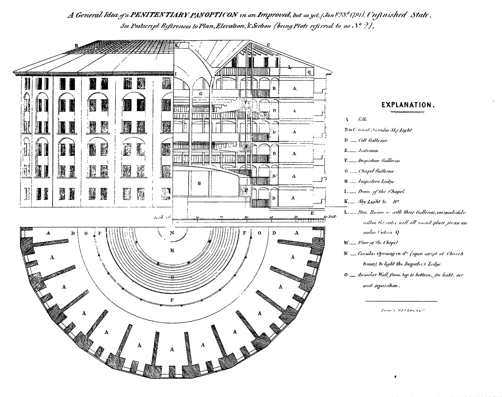

파놉티콘 (Panopticon)
검수 완료

| # | 원문 | 한국어 | 설명 |
|---|---|---|---|
| 1 | A General Idea of a PENITENTIARY PANOPTICON in an Improved, but as yet (Jan 23d 1791) Unfinished State | 개량했으나 아직 미완성인(1791년 1월 23일) 징역형 파놉티콘의 일반 구상 | 그림 맨 위 제목 |
| 2 | See Postscript References to Plan, Elevation, & Section (being Plate referred to as N° 2) | 후기(Postscript)의 평면도·입면도·단면도 참조(2번 도판) | 제목 아래 부제 |
| 3 | EXPLANATION | 설명(범례) | 오른쪽 목록의 제목 |
| 4 | A (Cells) | 감방 | 입면·단면 오른쪽 칸들과 평면의 바깥 고리에 반복해 적힌 글자 |
| 5 | B to C (Great Annular Sky Light) | 고리 모양 큰 채광창 | B는 입면 지붕 왼쪽, C는 단면 지붕 오른쪽 |
| 6 | D (Cell Galleries) | 감방 회랑 | 단면에서 감방(A) 바로 안쪽 줄, 평면에서 감방(A) 안쪽 고리 |
| 7 | E (Entrance) | 입구 | 단면 오른쪽 아래, 눈금자 위 |
| 8 | F (Inspection Galleries) | 감시 회랑 | 평면의 중앙 고리 바깥쪽 |
| 9 | G (Chapel Galleries) | 예배당 회랑 | 단면의 가운데 위쪽, 평면의 안쪽 고리 |
| 10 | H (Inspector's Lodge) | 감시인 숙소(중앙 감시실) | 단면의 가운데 아래, 둥근 바닥 아래 공간 |
| 11 | I (Dome of the Chapel) | 예배당 돔 | 단면의 가운데 위, 아치형 천장 |
| 12 | K (Sky Light to Do(Dome)) | 돔 채광창 | 지붕 가운데 꼭대기, 돔 위 |
| 13 | L (Store Rooms &c. with their Galleries, immediately within the outer wall all round) | 창고 등과 그 회랑(바깥벽 안쪽 둘레 전체) | 단면 지붕 밑 오른쪽 위 |
| 14 | Q (annular Cistern) | 고리 모양 물탱크 | 단면 오른쪽 위 모서리(L 설명 끝에 적힌 자리) |
| 15 | M (Floor of the Chapel) | 예배당 바닥 | 평면 가운데 |
| 16 | N (Circular Opening in Do (open except at Church times), to light the Inspector's Lodge) | 돔의 원형 개구부(예배 시간 외에 열어 감시인 숙소를 밝힘) | 평면 가운데 맨 위 |
| 17 | O (Annular Wall from top to bottom, for light, air and separation) | 위에서 아래까지 이어진 고리 모양 벽(빛·공기·분리용) | 평면에서 D와 F 사이의 고리 |
| 18 | Scale of … feet (10, 20, 30, 40, 50, 60 feet) | 축척(피트) | 입면 바로 아래 눈금자 |
쉽게 풀면
파놉티콘은 원래 철학자 제러미 벤담(Jeremy Bentham)이 제안한 감옥 건축 형태로, 중앙에 높은 감시탑을 두고 그 주위를 원형으로 감방이 둘러싸는 구조이다. 감시탑 안이 어둡게 처리되어 있어 죄수는 자신이 지금 감시당하고 있는지 아닌지 알 수 없다. 그 결과 죄수는 "혹시 지금 보고 있을지도 모른다"는 생각 때문에 항상 감시받는 것처럼 행동하게 된다. 철학자 미셸 푸코(Michel Foucault)는 이 구조를 현대 사회의 은유로 확장하여, CCTV·성과 평가·데이터 감시처럼 실제로 누가 보고 있는지 몰라도 사람들이 스스로 규율을 내면화하고 행동을 통제하게 되는 권력 작동 방식을 설명했다.
왜 중요한가
파놉티콘은 물리적 시설을 넘어 현대 사회의 권력과 통제 방식을 설명하는 핵심 은유로 자리 잡아, 감시 사회론·조직 관리론·미디어 연구 등 여러 분야에서 반복적으로 인용된다. CCTV, 온라인 플랫폼의 데이터 수집, 직장 내 성과 모니터링처럼 디지털 기술이 확산되면서 "보이지 않는 감시가 행동을 통제한다"는 이 개념의 설명력이 오히려 커지고 있어, 프라이버시와 권력 관계를 다루는 최신 연구에서도 이론적 출발점으로 자주 쓰인다.
핵심 주장
파놉티콘은 Jeremy Bentham이 1791년 제안한 원형 감시 건축이다. 중앙 감시탑에서는 모든 수감자를 볼 수 있고, 수감자는 자신이 지금 감시당하는지 알 수 없게 설계된다.
Michel Foucault는 감시와 처벌(1975)에서 파놉티콘을 근대 규율 사회의 은유로 썼다. 불평등한 시선이 사람들에게 자기 규율을 내면화시킨다는 것이 핵심이다.
근거와 대표 연구
실제 건축으로는 영국 Millbank 교도소(1821년 개관)가 Bentham의 설계에 바탕을 두었으나, 설계대로 완전히 지어지지는 않았다.
이후 연구자들은 파놉티콘 개념을 여러 감시 현상에 적용했다. 대표적으로 Mike Davis(1990)의 쇼핑몰 관제실, Zuboff(1988)의 정보 파놉티콘, Deleuze(1990)의 통제 사회, Bigo의 밴옵티콘(ban-opticon) 개념, Fuchs의 소셜미디어 분석이 있다.
비판과 한계
- 은유를 건축 사실과 구분한다: Foucault의 파놉티콘은 Bentham의 건축물을 그대로 설명하는 것이 아니라 권력 작동 방식의 은유이다.
- 적용 범위의 논쟁: 디지털 감시에 파놉티콘을 적용하는 연구가 많지만, 통제 사회나 밴옵티콘처럼 다른 틀을 제안하는 연구도 이어진다.
- 비판: Letwin과 Himmelfarb는 Bentham의 감시 모형을 억압의 도구로 묘사했다.
논문에서는 이렇게 쓰입니다
실제 논문에서
국내 학술지 논문에서 이 용어가 쓰인 문장을 그대로 옮겼다. 제목·학술지·연도와 원문 링크를 함께 적었다.
“이러한 문제를 방지하기 위해서 공간 내 사람을 감시하는 도구로 범죄를 예방하는 파놉티콘과 셉티드(CEPTED) 방안을 활용하고자 한다.”
무인 매장 절도 범죄 예방을 위한 생성형 AI의 캐릭터 활용 방안 탐구, 커뮤니케이션디자인학연구, 2024 · KCI 한국학술지인용색인 · 원문 보기 ↗
“한옥의 대청 구조, 중세 성곽, 벤담의 파놉티콘 등 전통 감시지향 건축물들을 분석하고, 이를 송도를 중심으로 한 현대 스마트시티의 지능형 감시 기술과 비교하였다.”
공간 속 감시: 건축적·외부적 통제에서 디지털·일상적 통제로의 전환, 한국공간디자인학회 논문집, 2025 · KCI 한국학술지인용색인 · 원문 보기 ↗
“파놉티콘 장치는 끊임없이 볼 수 있게 하고 즉각적인 인지를 가능케 하는 공간의 단위들로 배치한다.”
푸코의 주체화 전략: 신체의 노출과 이미지 관리를 중심으로, 인문사회과학연구, 2025 · KCI 한국학술지인용색인 · 원문 보기 ↗
조금 더 깊게 보면
푸코는 파놉티콘을 개별 시설이 아니라 근대 사회 전반에 퍼진 "규율권력(disciplinary power)"의 원형으로 제시했으며, 이는 처벌 위주의 전통적 권력과 달리 개인이 스스로를 감시하고 규범에 맞춰 행동을 조정하도록 만드는 방식이다. 최근 연구에서는 다수의 개인이 서로를 감시하는 수평적 감시 양상을 가리켜 시놉티콘(synopticon)이나 참여형 감시(participatory surveillance) 같은 파생 개념이 함께 논의되기도 하며, 디지털 플랫폼에서의 데이터 수집과 알고리즘 기반 감시를 다루는 연구도 이 계보 위에서 이루어지는 경우가 많다.
주의할 점
파놉티콘은 물리적 감옥 구조 자체보다 "보이지 않는 감시가 자기통제를 만들어낸다"는 권력의 작동 원리를 가리키는 개념이므로, 실제 CCTV 설치 여부보다 사람들이 감시를 얼마나 내면화했는지에 초점을 맞춰 해석해야 하며 헤게모니 개념과 함께 비교하면 이해에 도움이 된다.
참고 문헌
- Wikipedia contributors. (n.d.). Panopticon. Wikipedia.
- Wikipedia contributors. (n.d.). Discipline and Punish. Wikipedia.